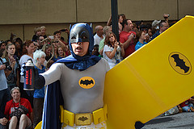

More Scavenging and hunting!
If you're reading this, you should have already completed the instructions in the Site1 section of this exercise. To continue the exercise, follow the instructions below.
- Create links to your html file in the scavenger hunt directory, and to the site1 index file.
- Add the small versions of the images found in the people and figures folders under "resources" below this list
- Make both images link to their larger versions
- Find any licensed for reuse image you like, download it, and add it to the banner folder under resources
- Add the image you just downloaded to this file
- Make the image a link to its original location on the internet


A Link!
Another link!